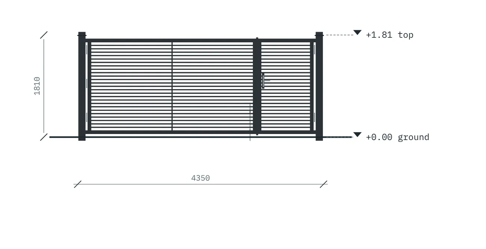
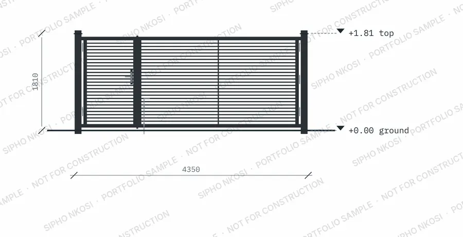
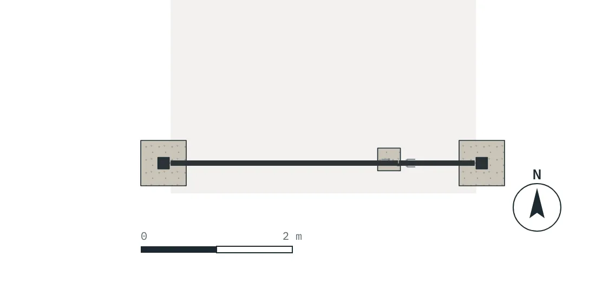
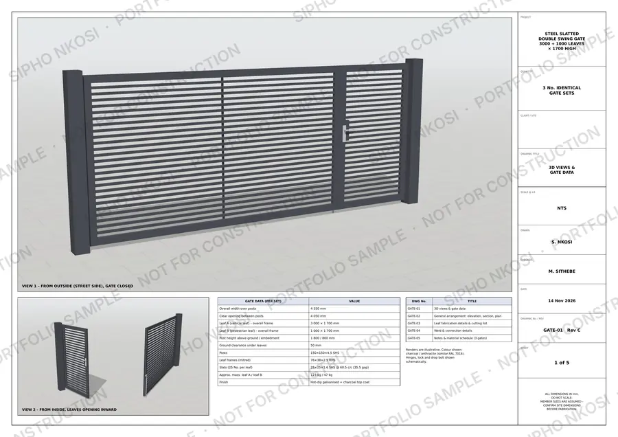
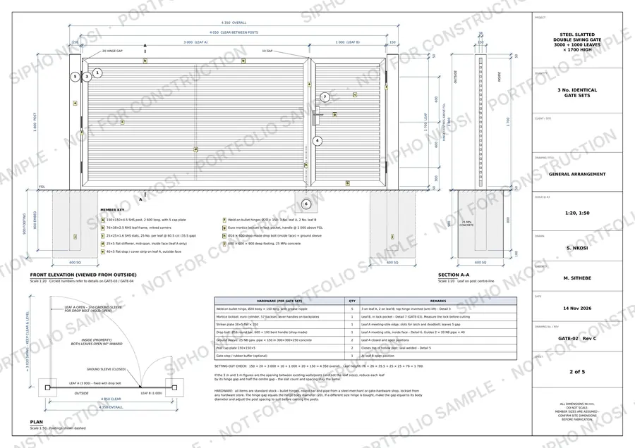
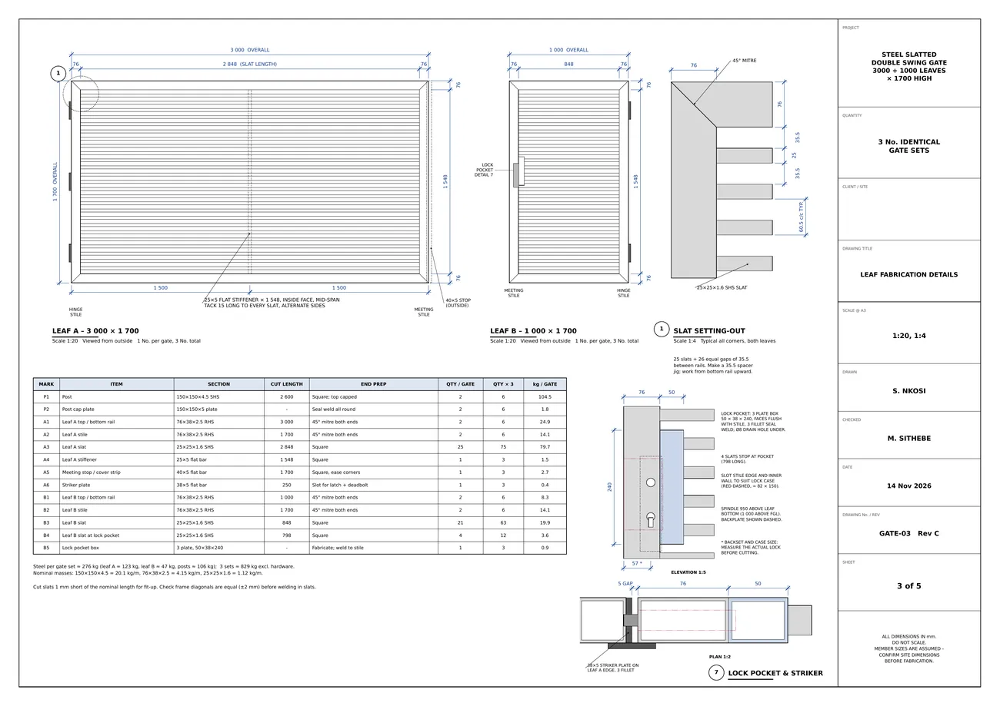
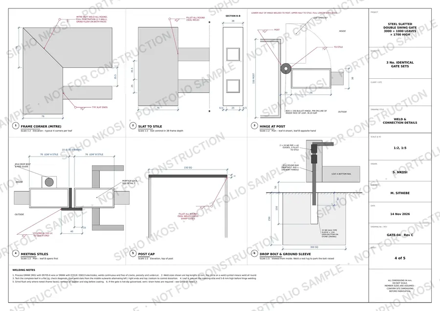
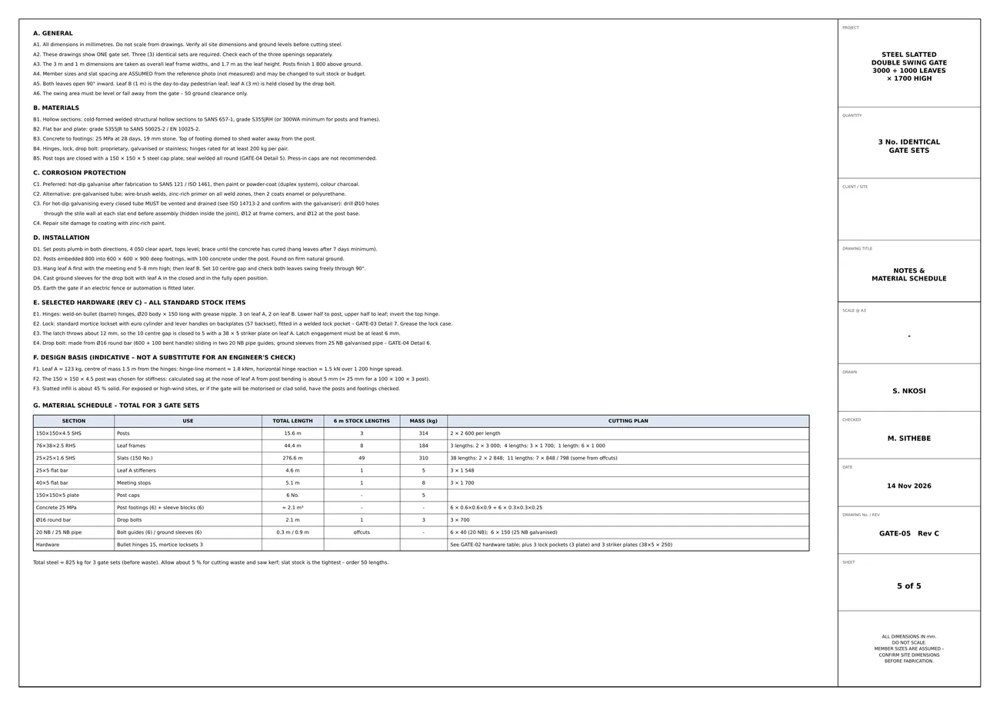

Problem statement
The client needed three matching double swing gates for property entrances, each with a 3 m vehicle leaf and a 1 m pedestrian leaf, 1.7 m high. There were no drawings, member sizes or hardware to work from.
Scope
What I was asked to deliver
A complete fabrication set for three gates: 3D views, general arrangement, leaf fabrication details and cutting list, weld and connection details, hardware selection, and notes with a material schedule.
Solution
How I solved it
- Sized the members: 150×150×4.5 SHS posts, 76×38×2.5 RHS mitred leaf frames and 25×25×1.6 SHS slats.
- Set out 25 slats per leaf at 60.5 c/c with equal 35.5 mm gaps, so the fabricator can work from a simple spacer jig.
- Checked the 123 kg vehicle leaf: hinge-line moment about 1.8 kN·m and about 5 mm sag at the nose from post bending, so three hinges on that leaf and a mid-span stiffener.
- Specified standard, easy-to-buy hardware: Ø20 weld-on bullet hinges with the top hinge inverted against lift-off, a euro mortice lock in a welded pocket, and a Ø16 drop bolt in galvanised ground sleeves.
- Detailed every weld and connection, and specified hot-dip galvanising with vent and drain holes placed so they are hidden inside the joints.
- Produced a cutting list and material schedule for all three sets: about 825 kg of steel, with slat stock planned to 49 lengths.
3D model
Watch it go together
Build sequence
Drag to orbit · scroll or pinch to zoom · right-drag to pan
Drawings
Plans, elevations & sections



Drawing set as issued
The original fabrication & construction sheets




